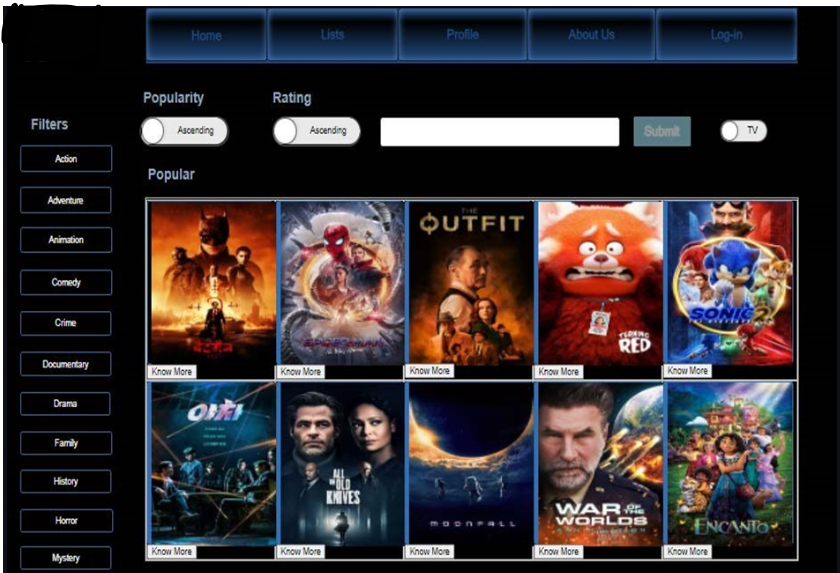
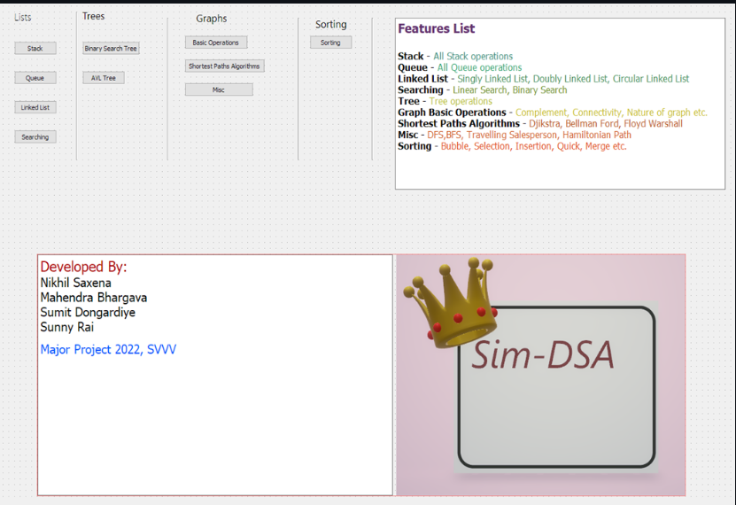

About Me
Engineer by choice. I like to read non-fiction books, grow vegetables, cook and write software. I play volleyball and cricket. Significantly shaped by One Piece.
Currently at XYZ Company as ABC.
End goal: Experience everything this life has to offer and find true contentment in it.
Blogs that I like: Link
Blogs that I made:
Technical Skills
NIKHIL SAXENA
Education
-
International Institute of Information Technology, Hyderabad
-
Shri Vaishnav Vidyapeeth Vishwadiyalaya, Indore
Projects

MDLShare
An IMDb-style clone using Django, HTML, and CSS with personalized home page features, recommendations, stats, and search.

SMLP
A PyQt desktop application that simulates data structures and algorithms including graphs, BSTs, and lists with standard operations.
POSIX> ls -l | grep .c
-rw-r--r-- 1 nikhil users 4096 main.c
POSIX> _
POSIX Shell
A simple POSIX-compatible shell focusing on core command execution, pipes, and environment handling.